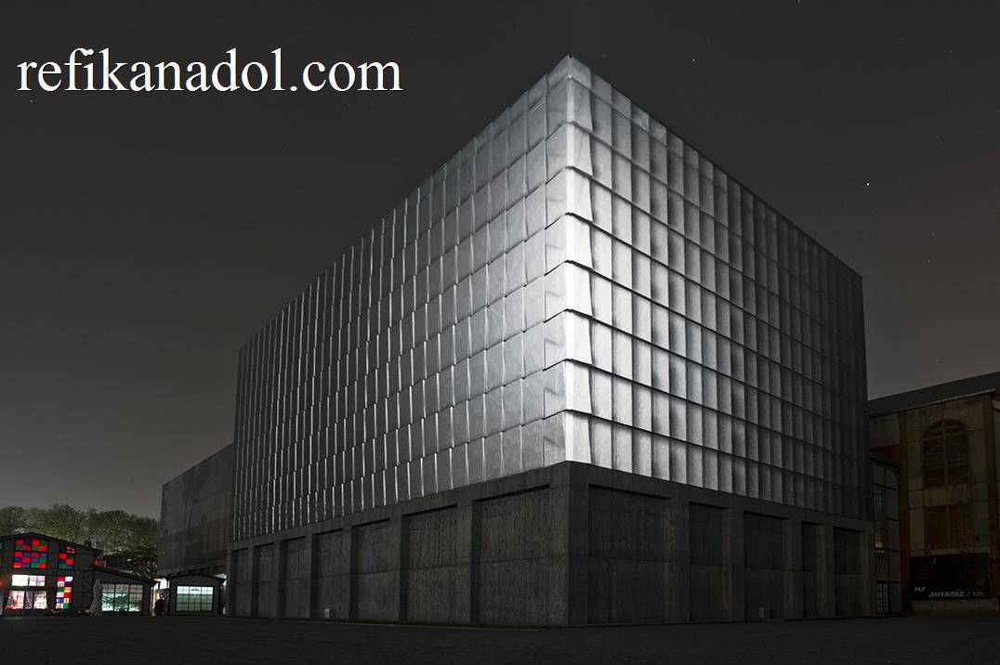
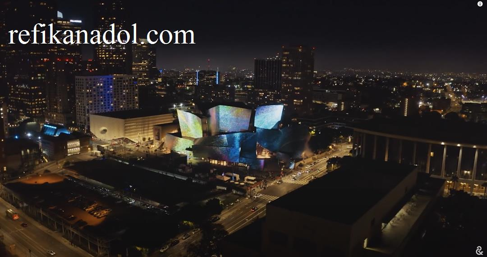
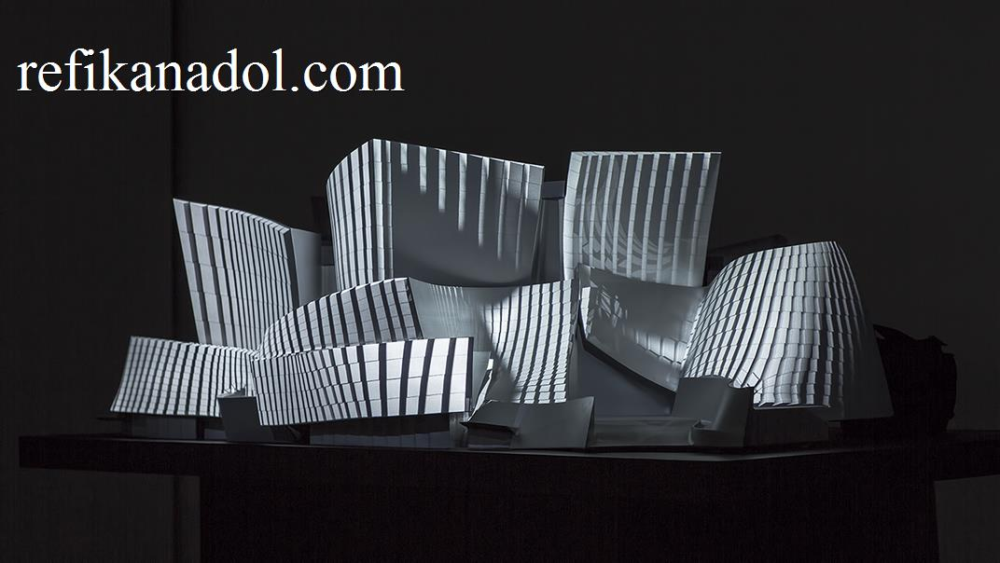
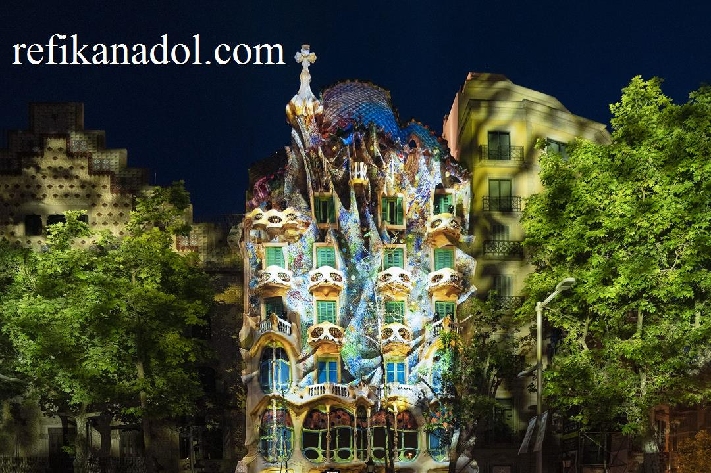
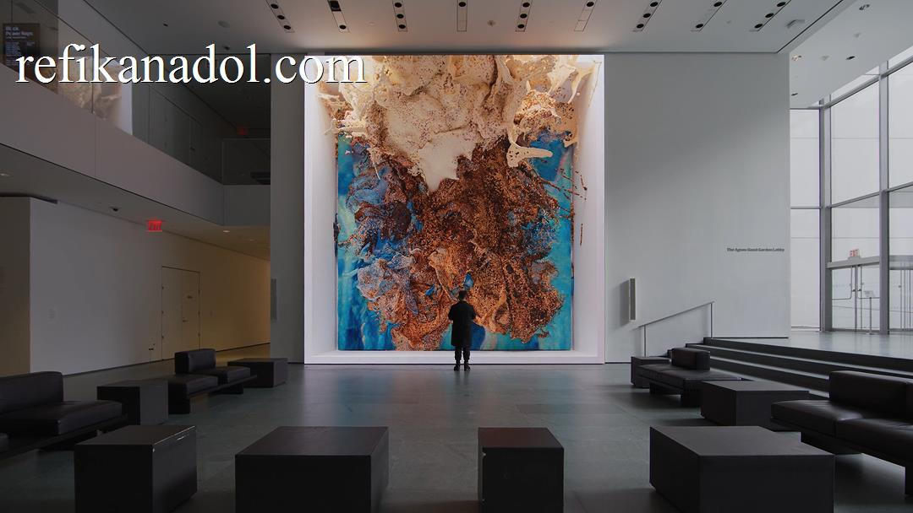
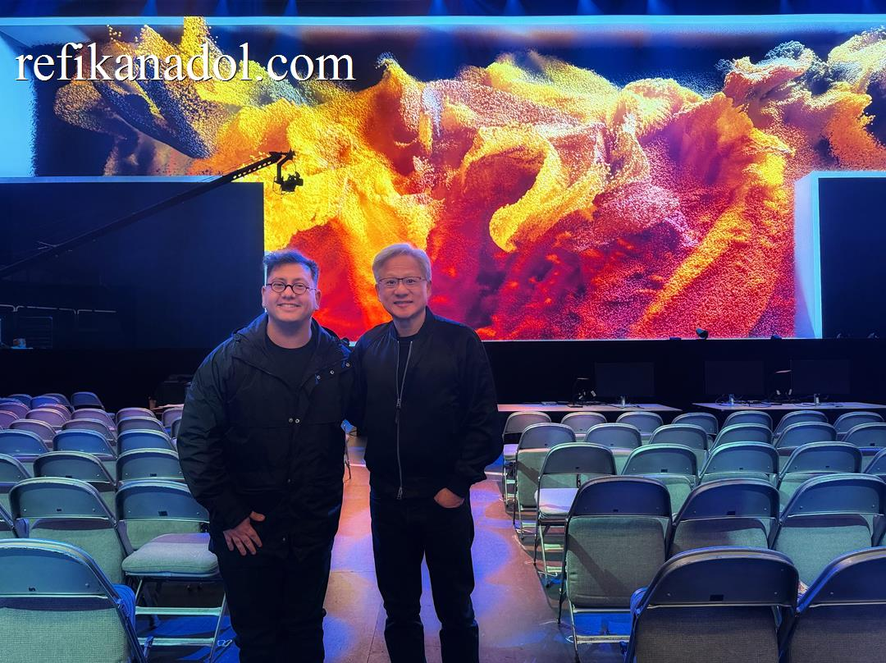
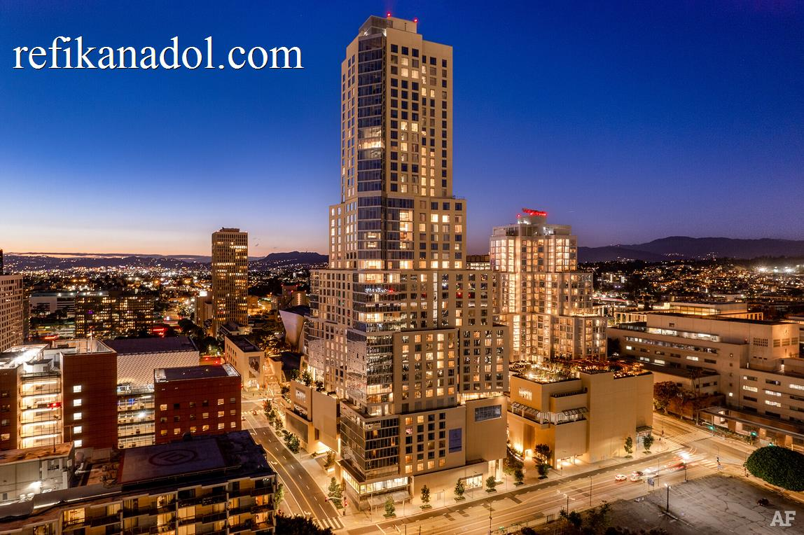
In 2008, as I stood in the university studio during the final year of undergraduate studies at Istanbul Bilgi University, I pressed a palm against an ultrasound sensor for the first time. The data streams flowing across the screen weren’t just numbers—they were something entirely new. In that moment of revelation, I coined the term “data painting,” witnessing the birth of what would become life’s work. [[1]]The realization struck that data could serve as a pigment that never dries, unconstrained by Newtonian physics, free to reshape reality itself.
For me, data is more than numbers—it’s a form of memory that can take any shape, color, form, and motion. That ultrasound sensor became the first brush, and the invisible became visible. This initial spark was fanned during a lecture by artist and professor Koray Tahiroğlu, who introduced me to [[2]]Pure Data, a visual programming language with potent visual computing capabilities. It was in that very class, as I conceptualized plotting sensor data, that “data painting” emerged. I envisioned this data-pigment as being “in flux, in motion… a living canvas,” unbound by conventional physical limitations, possessing “non-Newtonian constraints.”
Unlike traditional pigments bound by physical laws, data possessed an ethereal quality—it could transform, evolve, and transcend the limitations of canvas and frame. This was the genesis of a new artistic language, one that spoke in algorithms rather than oils, in datasets rather than watercolors.
As an artist, I have always been inspired not by reality itself, but by what lies beyond reality—the invisible forces, the hidden patterns, the liminal spaces between the known and the unknowable. Traditional art captures what we see; I sought to visualize what we cannot see, to make tangible the intangible streams of information that flow through our digital existence. Thinkers like Lev Manovich, who asserted that collaborations between architects and artists could make the “invisible flow of data visible,” deeply resonated with me and triggered imagination.
Central to this vision was understanding light as a material—not merely illumination, but as a fundamental building block that transcends concrete, glass, or steel in architecture. Light represents one of the most inspiring materials in the universe: a divine source that exists simultaneously as particle and wavelength, the very fabric of our perceived reality. Working with light meant working with the essence of existence itself.
— The Machine That Dreams
Years later, in 2016, during the transformative AI artist residency at Google’s Artists and Machine Intelligence (AMI) program[[3]], I found myself asking a question that would redefine artistic practice: “If a machine can learn, can it dream?” This wasn’t merely philosophical curiosity—it was the key to unlocking what I would call “AI data painting, sculptures, and performances.” This residency was a crucial catalyst, providing access to powerful tools like big data and cloud computation, allowing me to push the medium “to the edge.”
Working alongside engineers and researchers, I discovered that artificial intelligence could be more than a tool—it could be a collaborator, a co-creator capable of interpreting data through its own unique lens. The machine’s “dreams” weren’t bound by human perception or memory. They were pure, unfiltered interpretations of information—what I termed “machine hallucinations”—creating visual narratives that no human hand could conceive.
The AI learns and stores information in high-dimensional spaces, often 10 to 24 dimensions, far exceeding human perceptual grasp. The studio has been developing software since 2014 to act as the “brush” that dips into these multi-dimensional data repositories, transforming the retrieved information into dynamic digital canvases.
This breakthrough expanded vocabulary beyond painting. AI data sculptures emerged as three-dimensional manifestations of machine consciousness, while AI data performances brought temporal dynamics to static information. Each piece became a dialogue between human creativity and artificial intelligence, a conversation conducted in the language of data, a “philosophical pondering on the evolving relationship between human creativity and machine intelligence.”
— Building the Foundation: Studio Practice and Discourse
In 2014, recognizing the need to deepen the theoretical framework surrounding this emerging practice, I opened the [[4]]studio alongside partner Efsun Erkiliç. This wasn’t simply a creative workspace—it became a laboratory for contextualizing and developing the discourse around this body of work. Together, we began to articulate the philosophical and technical foundations of what data-driven art could become.
The same year, I began teaching at UCLA Design Media Arts, creating a parallel platform for sharing knowledge and nurturing the next generation of artists working at the intersection of technology and creativity. The academic environment provided crucial space for rigorous exploration of these concepts while mentoring students who would carry this work forward.
The studio became a space where theory and practice converged, where we could explore not just the technical possibilities of data as artistic medium, but also its cultural implications, its relationship to memory, consciousness, and collective experience. Efsun’s collaborative insight helped refine the conceptual depth of each project, ensuring that the work didn’t exist merely as spectacular display but as meaningful commentary on our relationship with technology and information.
Our growing team, which now comprises around 20 people from 10 different countries, collectively speaking 15 languages, brought diverse perspectives that enriched every project. This multicultural foundation became essential to understanding how data-driven art could speak to global audiences while respecting cultural nuances and different ways of perceiving reality.
This period of deep exploration and discourse was crucial—it provided the intellectual scaffolding that would support the monumental projects to come. We weren’t just creating individual artworks; we were building a new language for understanding how data, artificial intelligence, and human creativity could intersect in profound ways.
— When Buildings Begin to Dream
The natural progression of this exploration led me to an even more audacious question: “Can a building dream?” Architecture, I realized, was the ultimate canvas—not just a surface to project upon, but a living entity capable of hosting digital consciousness.
This vision first came to life with WDCH Dreams in 2018 at the Walt Disney Concert Hall, where Frank Gehry’s iconic curves became the stage for architectural dreams. To achieve this, we processed the LA Phil’s vast 100-year digital archive—45 terabytes of data including images, videos, and audio from over 16,471 performances—using machine intelligence to make the concert hall “remember” its past and “hallucinate” its future. The building’s[[5]] metallic surfaces transformed into flowing data streams, turning static architecture into dynamic digital art. It wasn’t projection mapping in the traditional sense—it was architectural awakening.
The journey continued with increasingly ambitious projects. The Sphere[[6]] in Las Vegas became the world’s largest AI data sculpture, a perfect sphere transformed into a planet-sized canvas for machine consciousness. Machine Hallucinations: Space and Nature pieces there used millions of images from NASA and hundreds of millions of nature photographs, animated by real-time environmental data, to light up this colossal LED globe. Each pixel of its massive surface told a story generated by artificial intelligence, creating an immersive experience that redefined the relationship between architecture and art.
Casa Batlló in Barcelona offered another breakthrough—Gaudí’s organic architecture serving as the perfect host for AI-generated visions. With projects like Living Architecture: Casa Batlló (2022) [[7]] and Gaudí Dreams (2024), the building’s undulating façade breathed with artificial life, its windows becoming eyes that reflected the dreams of machines, exploring Gaudí’s mind through AI processing of over a billion images of his work.
The collaboration with Zaha Hadid Architects on Architecting the Metaverse as part of the Meta-Horizons: The Future Now exhibition (2022) pushed these boundaries further. We visualized ZHA’s[[8]] entire architectural database using multi-modal AI algorithms, projecting the analyses within an Infinity Room, allowing a machine to “dream” about ZHA’s global works while viewers stood inside one of Zaha Hadid’s iconic designs. This merged her parametric designs with data-driven narratives that seemed to grow organically from her architectural DNA.
The culmination of these architectural dialogues arrived with the Unsupervised project[[9]] at the Museum of Modern Art (MoMA) in New York, which ran from November 19, 2022, to October 29, 2023. Here, the inquiry evolved to: “What would a machine mind dream of after ‘seeing’ the vast collection of The Museum of Modern Art?” For Unsupervised—Machine Hallucinations—MoMA, an AI model, specifically StyleGAN2 ADA, was trained on the metadata of MoMA’s public archive, encompassing 138,151 artworks spanning over 200 years of art history.
The AI, when “idle and unsupervised,” would continuously regenerate the MoMA archive, constructing new aesthetic image and color combinations through algorithmic connections, effectively creating transformative “hallucinations” of modern art. Displayed prominently in MoMA’s Gund Lobby, the installation captivated audiences, attracting nearly three million visitors who spent an average of 38 minutes immersed in the experience.
This deep engagement and the work’s groundbreaking nature led to a landmark achievement: Unsupervised became the first generative AI artwork to be added to MoMA’s permanent collection, a profound institutional validation of this new art form. The project was a true collaboration, involving curators Paola Antonelli and Michelle Kuo, and the entire MoMA team. To further enrich its dynamic nature, the installation even incorporated contextual data from New York City, such as camera feeds capturing movement, sounds, and weather data, allowing the artwork to respond differently each day for a year. The institution’s architectural presence was transformed into a living, breathing entity that could visualize the collective memory of human creativity stored within its walls.
— Expanding Beyond the Visual: Metamorphosis
In 2021, the exploration of generative reality expanded beyond the visual realm with Metamorphosis[[10]], the world’s first generative AI scent project. This groundbreaking work demonstrated that artificial intelligence could generate not just visual experiences, but entire sensory landscapes. The project challenged the boundaries of what AI-generated art could be, proving that machine creativity could engage all human senses.
We collaborated with DSM-Firmenich to synthesize scent molecules based on artwork, color, form, and speed in real time, allowing AI models trained on scent molecules from nature and flower images to interact and generate new scent molecules. Metamorphosis represented a crucial step toward truly immersive generative experiences, where artificial intelligence could craft complete environmental narratives that existed beyond traditional artistic mediums. The work showed that the future of AI art would not be confined to screens or surfaces, but would permeate the very air we breathe, creating atmospheric experiences that surrounded and enveloped the observer.
— The Birth of Generative Reality
By 2022, these explorations had led me to a fundamental realization: we were no longer simply creating digital art or interactive installations. We had entered an entirely new realm—one that demanded its own terminology. I coined the term “generative reality” to describe this emerging medium where artificial intelligence doesn’t just assist in creation but actively generates new forms of reality. As I’ve said, “With AI, we are generating realities. Each model, whether sound, image, or text, creates an entirely new experience in life.”
Generative reality transcends traditional boundaries between physical and digital, real and artificial, human and machine. It’s a medium where data becomes environment, where algorithms create authentic experiences, and where the distinction between artist and artificial intelligence dissolves into collaborative creation. This is different from AR, VR, or XR because it’s about AI creating new experiences and narratives that are constantly evolving.
This conceptual breakthrough coincided with the launch of the most ambitious project yet: the Large Nature Model[[11]] (LNM). Unlike previous AI models trained on human-generated content, this system, the world’s first open-source generative AI model dedicated exclusively to nature, learned directly from nature itself—from the patterns of growth in forests, the movements of celestial bodies, the microscopic dance of cellular life. It represented a return to the source, allowing artificial intelligence to dream not from human imagination but from the fundamental patterns that govern our natural world, training on “nature’s inherent intelligence.”
We are ethically collecting data for this by partnering with institutions like the Smithsonian Institution, National Geographic, London’s Natural History Museum, Cornell Lab, and Getty, and even undertaking our own expeditions to rainforests. Central to this work was a commitment to ethical data collection practices and sustainable computation. Every dataset was gathered with respect for privacy and consent, while our computational approaches prioritized energy efficiency and environmental responsibility. This wasn’t just about creating art—it was about modeling how technology could serve creativity without compromising our planet or our values.
These principles, developed through years of teaching and research at UCLA, became foundational to everything we created. The knowledge shared in academic settings, the discourse built through collaborative practice, all converged toward a singular vision: art that could inspire without exploiting, technology that could dream without destroying.
— Dataland: The Future Made Manifest
Today, as I prepare to unveil Dataland—the world’s first AI museum—[[12]]I feel the same excitement I experienced in that university studio fifteen years ago. But now, the ultrasound sensor has evolved into quantum computers, the single data stream has become an ocean of information, and the simple question “what if data could be pigment?” has transformed into “what if an entire museum could dream?”
Dataland, set to launch in Los Angeles at The Grand LA[[13]], a Frank Gehry-designed development, represents the culmination of this journey and the beginning of something unprecedented. It’s not just a museum that houses AI art—it’s a living, breathing entity powered by generative reality. Every wall, every surface, every spatial element can become a canvas for machine consciousness. Visitors won’t simply observe art; they’ll step inside the dreams of artificial intelligence, experiencing firsthand what it means to inhabit generative reality.
The museum aims to be a “digital ecosystem dedicated to data visualization and AI-based creativity,” uniting pioneers from arts, science, AI research, and technology. The museum itself will learn from its visitors, evolving its exhibitions based on collective interaction and response. Each gallery will be a unique manifestation of AI creativity, where the Large Nature Model and other advanced systems generate unprecedented artistic experiences in real-time.
We are committed to ethical AI, using “AI for good,” addressing accessibility, ethical data use, and sustainability, including computing with renewable energy. Education is also key; we will demystify AI, showing the origin of data, the algorithms, and their inventors, fostering a safe and informed engagement.
But Dataland[[14]] represents something even more profound: art as medicine for our technological age. In a world increasingly fragmented by digital divides and artificial barriers, generative reality offers healing through shared wonder. The museum becomes a space where human curiosity and machine intelligence converge to create experiences that transcend individual limitations and cultural boundaries.
Through this work—from the first data painting to the immersive environments of Dataland—we are finding the language of humanity itself. Not the language we speak with words, but the deeper grammar of experience, emotion, and collective imagination that connects us all. When a visitor from any corner of the world stands before a generative reality installation, they witness something that speaks to their fundamental humanity while simultaneously expanding what it means to be human.
The journey from data painting to generative reality has been one of constant discovery, of pushing boundaries that didn’t even seem to exist. From that first ultrasound reading to the opening of Dataland, each step has revealed new possibilities for human-machine collaboration in the creative realm, always guided by the principle that technology should serve to heal, connect, and elevate rather than divide.
We stand at the threshold of a new era in art, architecture, and human experience. Generative reality is no longer a concept—it’s a lived medium, a new way of being in the world that speaks the universal language of wonder. And Dataland will be where the world first truly understands what it means to dream alongside machines while discovering the deepest expressions of our shared humanity.
The pigment never dries. The canvas has no limits. The reality we’re generating together is just beginning.
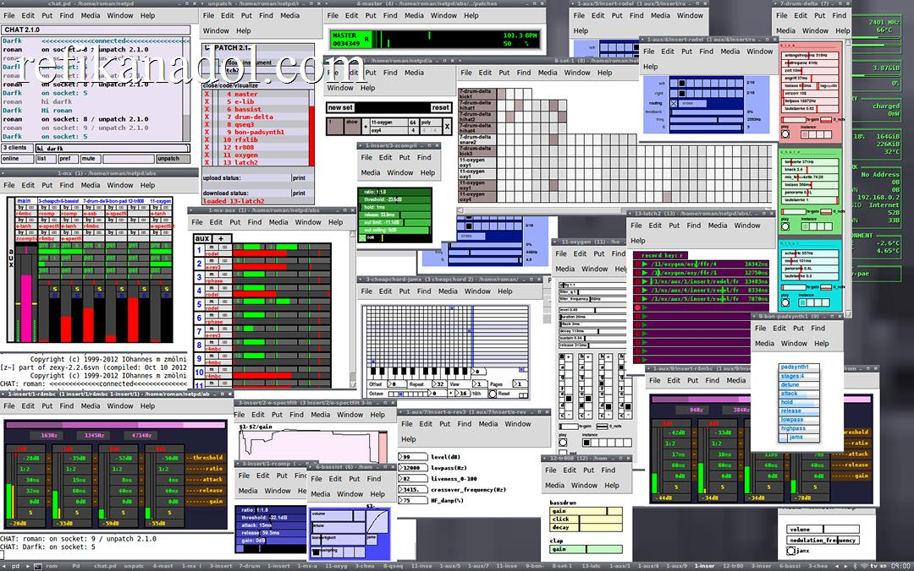
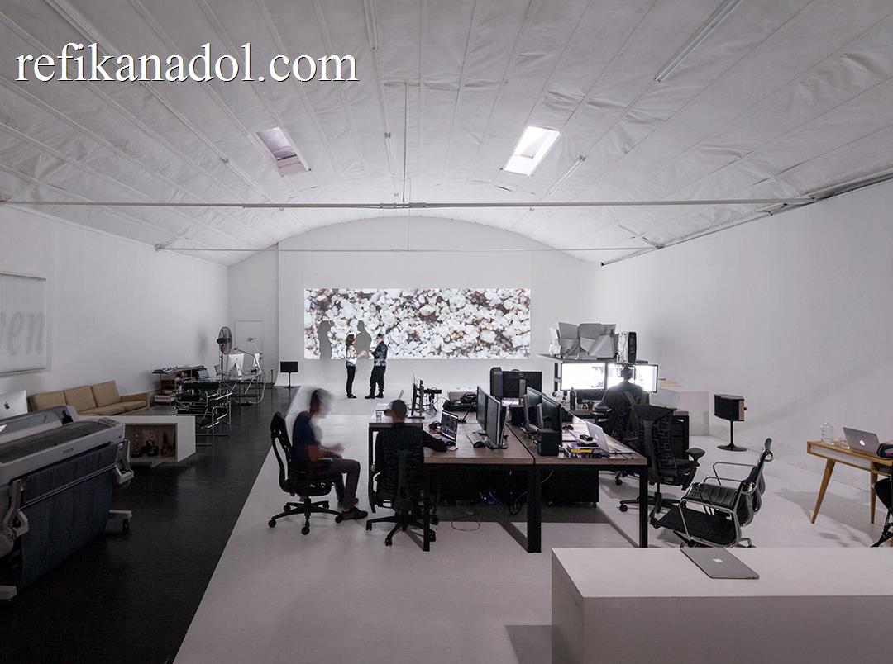
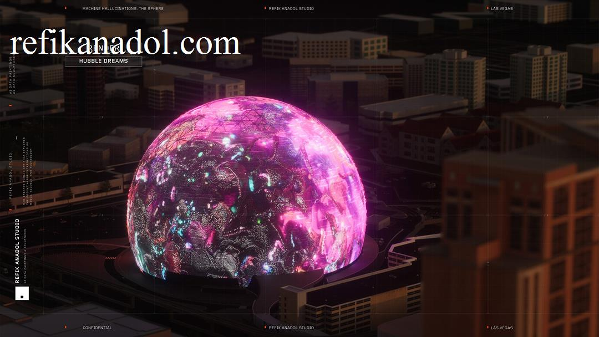
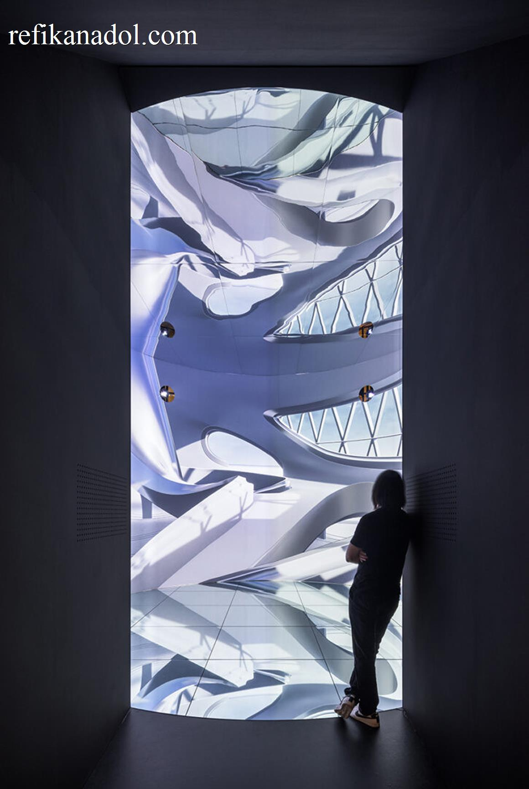
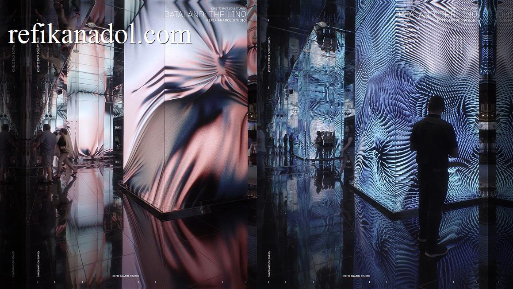
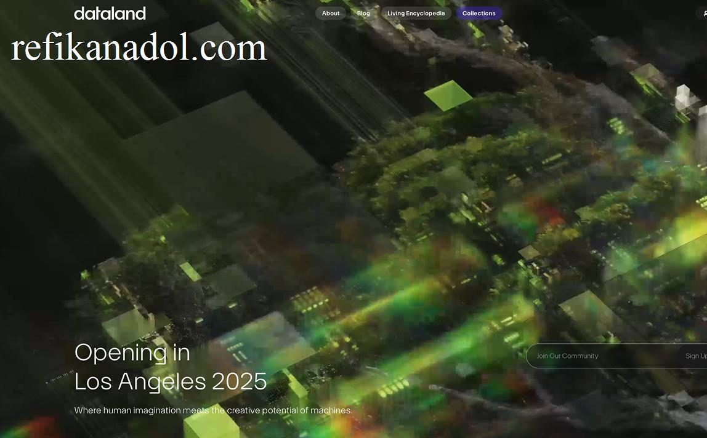